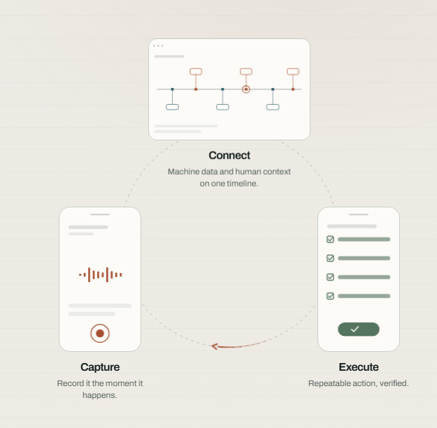

Operator Intelligence for manufacturing
How manufacturing companies turn the knowledge of their best operators into measured, repeatable improvement, proven on the floor in ten weeks.
Management Outlook · July 2026 · Confidential · oppr.ai
When time matters
Rising feedstock prices, rising energy costs, tougher global competition. When performance has to improve and there is no time for a two-year IT project, four things matter.
From first data access to a verified improvement on the floor in roughly 90 days. Fast enough to show up in this year’s numbers, not the next owner’s.
No hardware, no infrastructure, no integration project. A fixed fee that sits within local management’s mandate, with no board approval cycle needed to start.
Scrap, unplanned stops, changeover losses, reporting hours. The improvement potential is already inside the plant. It is just not visible yet.
The same method transfers from line to line and site to site. Prove it once, then roll it out wherever the pattern repeats. Configuration and learnings carry over.
Every step is fixed-fee and stops whenever the numbers say stop: the risk profile of a diagnostic, the outcome of an improvement program.
Why this, why now
Every plant steers on numbers, and every plant has questions the numbers can’t answer. The answer exists. It is just never recorded.
A different infeed, a machine running slightly off, an operator quietly adjusting: the small events that decide the outcome.
In scrap, an unplanned stop, a failed lab result, a complaint. Hours, days, sometimes weeks after the cause.
The why sits with whoever was on shift. Part memory, part Excel, part paper log. Unusable when you need it.
What your operators see, hear and decide is your most valuable operational data, and thirty years of it walks out at every retirement.
What Oppr is · the platform
Capture: record what operators see, the moment it happens.
Connect: machine data and human context on one timeline.
Execute: a repeatable action, verified on the floor.
One system for the complete operational loop, not a stack of tools. No new hardware: it works with your current systems, or without any SCADA at all.

Why do this
Conditions, observations, actions and outcomes: the whole story in one place.
Senior judgement captured and shared across shifts, not lost at the next retirement.
Repeat problems stop repeating once cause and effect finally share a timeline.
Every fix is executed and verified on the floor, so it stays the standard.
Verified reference case
European plastics plant · mid-size, multi-line extrusion · Proof + implementation
Reference call available on request.
Heard on the floor
Two weeks after starting with Oppr, our operators captured more useful information than we’d collected in the previous decade on paper logs and Excel.
What we did
Operations Director
PVC extrusion · Netherlands
One operator observation prevented a € 55,000 bearing failure. The system flagged a pattern we’d never have caught with sensors alone.
What we did
Operations Director
Chemical manufacturing · Amsterdam
We always used our output data and our mass balance to work out what happened. We could never pinpoint the impact of the changing feedstock.
What we did
Operations Director
Waste incinerator · Netherlands
KPIs & payback
The figures below are a single improvement, on a single line, on deliberately conservative assumptions. Most plants run several lines across several sites, and the same method repeats on each.
Recover around 20 production hours a year at € 2.500 per lost hour.
0,5% less off-spec output on € 20M of annual production value.
Five hours a week of engineer and supervisor time won back.
Entry: € 10.000, fully credited. Total to a verified improvement: € 25.000 all-in. One avoided stoppage-day roughly pays for the analysis. You know your payback before the Proof starts.
The engagement
Each step earns the next. Fixed fees, no surprises. Stop whenever the numbers say stop.
€ 10.000fixed · 2–3 weeks · 100% credited
Your blind spots, KPI targets and payback, from data you already have.
€ 25.000fixed, all-in, regardless of hours
One line, one blind spot, criteria signed up front. A verified improvement by week ten.
Priced on operational sizescoped on lines, sites and modules · 50% of the Proof fee credited on conversion
The verified improvement becomes standard practice and expands to the next line and site.
Operator acceptance
Adoption is the whole game. A tool operators skip is worthless, so Oppr is built to make contributing effortless for everyone on the floor, and to turn what they know into one shared body of knowledge.
Speak, snap a photo or read a screen, in the flow of work. AI turns it into structured data, so the operator who never filled in a form, or does not speak the local language, finally contributes the knowledge in their head.
Every operator and every shift adds to the same record. The know-how that used to walk out with individuals becomes something the whole plant can use, and keep. Nothing is lost because someone could not write it down.
Oppr captures what the line is doing and why, never individual performance. There are no individual operator KPIs, rankings or monitoring in the product.
Transparent purpose, GDPR-compliant, EU-hosted data, and clear boundaries on what is and is not recorded. We support the conversation with your employee representatives.
Adoption is measured, not assumed: “operators actually use it” is a signed Proof success criterion.
Who we are
Oppr was built on the shop floor by people who ran it. Our founding lesson: the data and the knowledge already exist on the floor; what is missing is a way to keep them.
The people on the floor are the most capable sensors in any factory. They sense what no instrument records. Our job is to turn that into a data source.
Technology adapts to how people work, not the other way around. If operators will not use it by choice, it has failed.
Not another dashboard that shows a problem and stops there. We are operators by heart: getting it done is the point. Continuous improvement is not software, it is a change in how you work, and it only exists if you execute it, consistently.
Founded by Floris Wyers after 15+ years running production in process industry: “We created Oppr so you never have to guess what is happening on your own floor again.”
Next step
Pick the plant, the line and the recurring question that costs you the most.
2–3 weeks from data access. Your blind spots, KPI targets and payback on the table.
With your own numbers, and the € 10.000 fully credited if you proceed.
Best attended by operations leads together with a process expert.
Floris Wyers · Founder & CEO, Oppr.ai
floris@oppr.ai · +31 (0)6 24 69 02 39 · www.oppr.ai · The Hague, NL
This document is for the conversation, not for signature. Formal terms follow in a short Statement of Work once scope is agreed. · Oppr.ai · Confidential · July 2026
Operator Intelligence for manufacturing
oppr.ai · floris@oppr.ai · +31 (0)6 24 69 02 39 · The Hague, NL
Oppr.ai · Confidential · July 2026